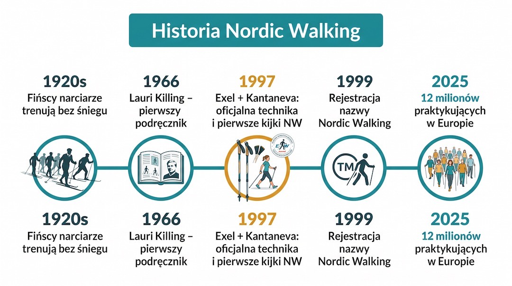
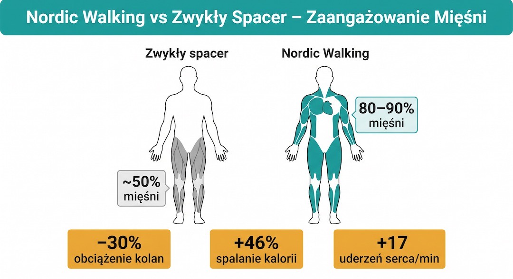
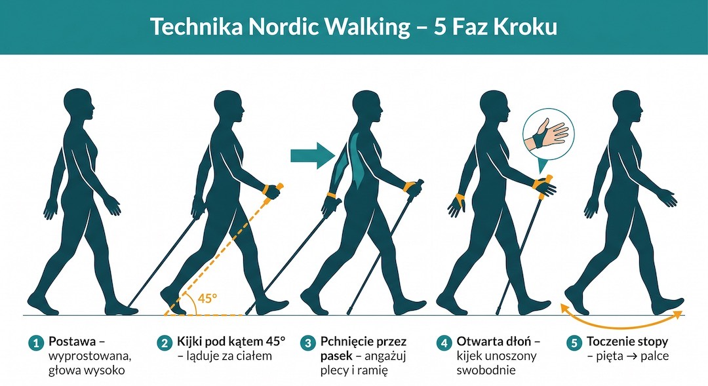
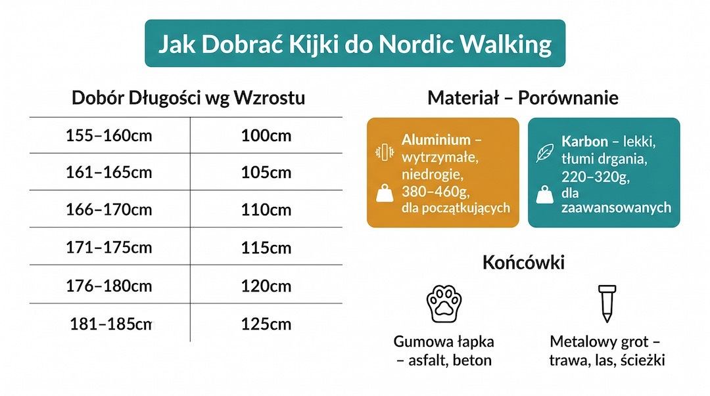
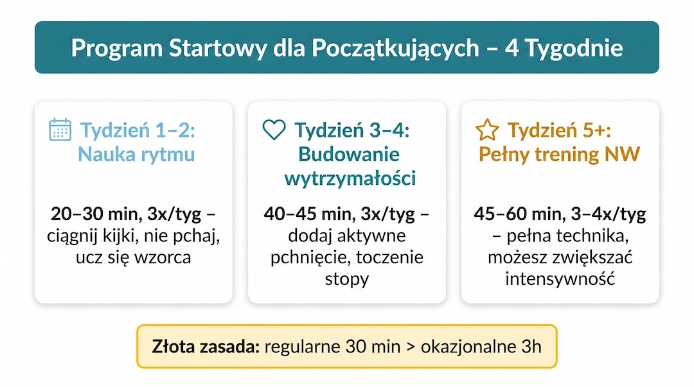
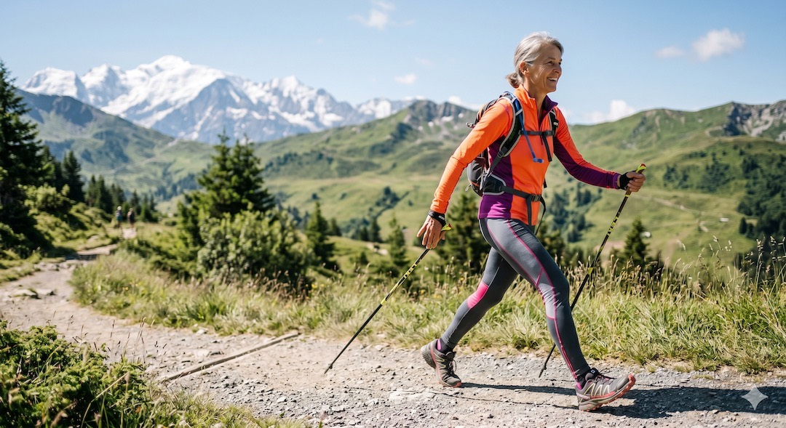
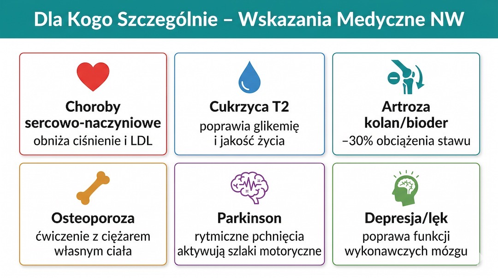

Mijasz ich w parkach czy na leśnych ścieżkach. Idą rytmicznie, wyprostowani, z kijkami – trochę jak narciarze biegowi na suchym lądzie. Choć nordic walking wciąż bywa traktowany z przymrużeniem oka, nauka nie pozostawia złudzeń: to jedna z najskuteczniejszych form ruchu po 50. roku życia.
Szybka odpowiedź
Nordic walking po 50-tce działa najlepiej, gdy kijki nie są ozdobą, tylko aktywnie odpychają ciało do przodu. Zacznij od spokojnych spacerów 20-30 minut, 2-3 razy w tygodniu, pilnując pracy ramion i wyprostowanej sylwetki. Jeśli bolą barki lub nadgarstki, skróć krok i sprawdź długość kijów.
Najnowsza meta-analiza 22 badań (NIH, 2025) potwierdza to, co instruktorzy wiedzą od lat: regularny marsz z kijkami obniża ciśnienie skurczowe, poziom LDL i trójglicerydów, poprawiając jednocześnie wydolność tlenową (VO₂max). Co ważne dla naszej grupy wiekowej – nordic walking realnie wzmacnia mózg, poprawia równowagę i chroni stawy.
Z tego przewodnika dowiesz się, jak zacząć, by nie rzucić kijów po tygodniu, jak uniknąć błędów technicznych i na co zwrócić uwagę przy zakupie sprzętu. Bez zbędnego żargonu – sama konkretna wiedza.
Zobacz więcej porad z kategorii Ruch, sprawdź też dział Zdrowie, pełny katalog Porady oraz plan startowy Trening 3x30 dla 50+.
Kluczowe wnioski
Kluczowe wnioski
- Nordic Walking angażuje do 90% mięśni ciała, oszczędzając jednocześnie stawy kolanowe o 30%.
- Prawidłowa technika opiera się na naprzemiennym ruchu i wbijaniu kija pod kątem 45 stopni za linią bioder.
- Badania z 2025 roku potwierdzają skuteczność NW w obniżaniu ciśnienia, cholesterolu i poprawie funkcji mózgu u osób 50+.
- Kluczowym elementem sprzętu jest 'rękawiczka' – pasek nadgarstkowy umożliwiający poprawne odpychanie.
- Dla efektów zdrowotnych zaleca się minimum 3 sesje po 45-60 minut tygodniowo.
Skąd wziął się Nordic Walking? Fiński patent na formę?
Wszystko zaczęło się w Finlandii na początku XX wieku. Fińscy biegacze narciarscy, chcąc utrzymać formę latem, zaczęli trenować „na sucho”. Chodzili z kijkami po lasach i pagórkach, by imitować ruch narciarski i nie tracić siły w ramionach. Był to czysty pragmatyzm, który przetrwał dziesięciolecia.
Oficjalne ramy dyscyplina zyskała dopiero w 1997 roku. We współpracy z fińskim fizjologiem Mauri Repo opracowano wtedy zasady techniki i stworzono kije dedykowane wyłącznie do marszu – lżejsze i inaczej wyważone niż te narciarskie. Od tamtej pory nordic walking stał się globalnym fenomenem. Polska jest dziś jednym z liderów tej dyscypliny w Europie, a polscy instruktorzy należą do najlepiej wyszkolonych na świecie.
Warto zapamiętać: NW nie powstał jako „spacer dla seniorów”, ale jako letni trening dla wyczynowych narciarzy. To dlatego tak mocno angażuje ramiona, plecy i klatkę piersiową. To sport o sportowym rodowodzie.

Najważniejsze z tej sekcji
Kamienie milowe: lata 20. XX w. (treningi narciarzy) → 1966 pierwszy podręcznik (Lauri Killing) → 1997 oficjalna technika i dedykowane kije. Dziś to ponad 12 milionów aktywnych osób w samej Europie.
Źródło: INWA (International Nordic Walking Association)
Medycyna i liczby: dlaczego Twoje ciało kocha kijki?
Główna różnica między zwykłym spacerem a nordic walking to zaangażowanie mięśni. Podczas zwykłego chodu pracują głównie nogi i pośladki – to ok. 50% Twojej masy mięśniowej. Kiedy włączasz do pracy kije (i robisz to technicznie poprawnie), aktywujesz barki, ramiona, brzuch i plecy. Efekt? Pracuje nawet 90% mięśni.
Co to oznacza w praktyce po 50-tce? Badania kliniczne opublikowane w 2025 roku przez NIH wskazują, że już 8 tygodni regularnych marszów znacząco poprawia równowagę i szybkość chodu. Co więcej, NW pozytywnie wpływa na funkcje wykonawcze mózgu – planowanie i koncentrację – co jest kluczowe w profilaktyce zmian neurodegeneracyjnych.
Dla osób z nadwagą lub problemami ze stawami najważniejszy jest jednak inny argument: kije odciążają kolana o ok. 30%. To pozwala na intensywny trening cardio nawet przy artrozie czy bólach kręgosłupa, bez ryzyka pogłębienia urazów.

Najważniejsze z tej sekcji
Dane NIH 2025: Poprawa VO₂max, spadek LDL i ciśnienia skurczowego. Stawy: O 30% mniejszy nacisk na kolana w porównaniu do marszu bez wsparcia.
Źródło: Archives of Gerontology and Geriatrics 2024; NIH 2025 meta-analysis
Prawidłowa technika: 3 kroki do sukcesu?
Prawidłowa technika to nie „popychanie się patykami”, a naturalny, naprzemienny ruch. Prawa ręka wychodzi do przodu z lewą nogą – dokładnie tak, jak chodzisz na co dzień. Kije mają ten ruch jedynie wzmocnić i nadać mu dynamiki.
Postawa: Stań wyprostowany, patrz przed siebie (nie pod nogi). Barki powinny być luźne, nie podciągnięte do uszu. Chwyt: To najczęstszy błąd – nie ściskaj rączki jak imadła. Dłoń wsuwasz w specjalny pasek (rękawiczkę). To właśnie pasek przenosi siłę Twojego odepchnięcia, a nie palce. W fazie wypchnięcia dłoń powinna się wręcz otwierać.
Miejsce wbicia: Kijek ląduje pod kątem ok. 45 stopni, zawsze ZA linią Twojego biodra (lub na jego wysokości). Jeśli wbijasz kije przed sobą, hamujesz ruch zamiast go przyspieszać. Pamiętaj też o stopie: każdy krok powinien zaczynać się od pięty i płynnie przechodzić przez śródstopie aż do odbicia z palców.

Najważniejsze z tej sekcji
Zasada 45 stopni: Kijek zawsze celuje w tył. Jeśli ląduje pionowo przed Tobą, tracisz 90% korzyści z treningu górnych partii ciała.
Źródło: International Nordic Walking Federation (INWA)
Jak wybrać kije i nie kupić „atrap”?
Dobre kije to podstawa Twojego bezpieczeństwa. Długość: Stań prosto i chwyć kijek – kąt w łokciu powinien wynosić równe 90 stopni. Jeśli kupujesz przez internet, pomnóż swój wzrost przez 0,68. Wynik to Twoja idealna długość.
Materiał: Aluminiowe są tańsze i wytrzymałe, ale gorzej tłumią drgania. Karbonowe (z włókna węglowego) są bardzo lekkie i świetnie chronią Twoje stawy przed wstrząsami przy uderzeniu o asfalt, ale są droższe i bardziej kruche przy uderzeniach bocznych.
Najważniejszy element: Rękawiczka. Unikaj kijów, które mają zwykłą pętlę na nadgarstek (jak w kijach narciarskich). Prawdziwy kij do NW musi mieć system „rękawiczki”, który stabilnie trzyma dłoń i pozwala ją otworzyć podczas marszu. Bez tego poprawna technika jest niemożliwa.

Najważniejsze z tej sekcji
Rada eksperta: Kije trekkingowe (w góry) to nie kije do Nordic Walking. Mają inne rączki i paski. Do marszu w parku szukaj wyłącznie modeli z rękawiczką.
Źródło: Outdoor Gear Lab 2026; INWA
Plan na start: pierwsze 4 tygodnie?
Nie rzucaj się od razu na godzinną trasę. Twoje ramiona i plecy muszą przyzwyczaić się do nowego rodzaju wysiłku. Zacznij od 20–30 minut marszu, 3 razy w tygodniu. Przez pierwsze dni możesz nawet.. nie wbijać kijów. Po prostu idź i ciągnij je za sobą na paskach, by wyczuć rytm.
W trzecim i czwartym tygodniu wydłuż czas do 45 minut. Skup się wtedy na pełnym toczeniu stopy i aktywnym odpychaniu. Pamiętaj o prostej zasadzie: jeśli podczas marszu możesz swobodnie rozmawiać, tempo jest idealne dla Twojego serca.

Najważniejsze z tej sekcji
Rozgrzewka: Zawsze poświęć 5 minut na krążenia ramion i bioder przed startem. Po marszu rozciągnij łydki – podziękują Ci następnego dnia.
Źródło: INWA Program Startowy 2026
Fakty i mity: czego nie powie Ci sprzedawca?
Wiele osób myśli, że to „sport dla seniorów”, bo tempo wydaje się wolne. To błąd. Przy tym samym tempie, dzięki pracy ramion, spalasz do 46% więcej kalorii niż podczas spaceru. To idealny sposób na zrzucenie wagi bez obciążania kręgosłupa.
Kolejna sprawa to buty. Nie potrzebujesz drogiego obuwia „dedykowanego do NW”. Wystarczą dobre, stabilne buty do biegania z elastyczną podeszwą. Ważne, by nie były to ciężkie buty trekkingowe za kostkę – one uniemożliwiają poprawne toczenie stopy od pięty do palców.

Najważniejsze z tej sekcji
Ciekawostka: W Skandynawii lekarze przepisują nordic walking jako oficjalną formę rehabilitacji po zawałach. To najbezpieczniejszy powrót do sprawności.
Źródło: Harvard Health; PubMed 2024
Kiedy kijki są Twoim najlepszym lekiem?
Istnieją konkretne schorzenia, w których nordic walking wykazuje działanie niemal terapeutyczne. W przypadku cukrzycy typu 2 (badanie NIH 2025) regularny ruch z kijami znacząco poprawia glikemię na czczo i ogólną jakość życia pacjenta.
Przy osteoporozie marsz z kijami jest bezpieczną formą obciążenia kości, co stymuluje ich gęstość bez ryzyka upadku. Z kolei w przypadku choroby Parkinsona rytmiczny ruch rąk pomaga „przestawić” mózg na lepszą koordynację i stabilność chodu. Jeśli cierpisz na przewlekły stres – kontakt z naturą i rytmiczny oddech podczas marszu to jedno z najlepszych narzędzi higieny psychicznej po 50-tce.

Najważniejsze z tej sekcji
Uwaga: Jeśli jesteś świeżo po operacji serca lub masz nieuregulowane nadciśnienie (powyżej 180/110), skonsultuj się z lekarzem przed pierwszym treningiem.
Źródło: Clinical Practice 2025; Seniors Guide 2025
Najczęstsze pytania?
Gdzie w Polsce uczyć się techniki od profesjonalistów?
Szukaj instruktorów certyfikowanych przez Polskie Towarzystwo Nordic Walking (PTNW). Wiele gmin organizuje darmowe zajęcia w parkach miejskich. Warto zainwestować w 1-2 lekcje z profesjonalistą, by nie utrwalać złych nawyków.
Warto przeczytać też: trening siłowy, dieta po 50-tce, sen i regeneracja.
Powiązane tematy: trening siłowy, dieta po 50-tce, sen i regeneracja.
Czy kije teleskopowe (składane) są gorsze?
Są wygodniejsze w transporcie, ale kije jednoczęściowe (o stałej długości) są zazwyczaj lżejsze i lepiej tłumią drgania. Jeśli masz miejsce w bagażniku, wybierz kije stałe.
Co zrobić, gdy po marszu bolą mnie dłonie?
Prawdopodobnie za mocno ściskasz rączki. Rozluźnij chwyt i pozwól, by to pasek (rękawiczka) wykonywał pracę podczas pchania. Dłoń powinna być „zamknięta” tylko w fazie przenoszenia kija do przodu.
Jak zacząć nordic walking po 50-tce, żeby się nie przeciążyć?
Zacznij od spokojnego tempa i krótszych spacerów 20-30 minut, a czas wydłużaj stopniowo co tydzień. Najpierw dopracuj technikę pracy kijami, potem zwiększaj intensywność. Regularność 3 razy w tygodniu daje trwalszy efekt niż pojedyncze, bardzo długie treningi.
Nordic Walking to rzadkie zjawisko: trenujesz serce, mięśnie i mózg jednocześnie, będąc delikatnym dla swoich stawów. To najlepszy upgrade, jaki możesz dać swojemu codziennemu spacerowi.
Źródła
Źródła po 50-tce warto wdrażać krok po kroku i od razu łączyć teorię z praktyką. Dzięki temu łatwiej utrzymać regularność, poprawić bezpieczeństwo działań i szybciej zauważyć trwałe efekty zdrowotne w codziennym życiu.
- https://pubmed.ncbi.nlm.nih.gov/39476525/
- https://www.health.harvard.edu/exercise-and-fitness/fitness-trend-nordic-walking
- https://pmc.ncbi.nlm.nih.gov/articles/PMC3772584/
- https://www.inwa-nordicwalking.com
Uwaga: Treści mają charakter edukacyjny. Przed rozpoczęciem treningów przy schorzeniach kardiologicznych lub ortopedycznych skonsultuj się z lekarzem lub fizjoterapeutą.